提瓦特異聞錄：風神的惡作劇

旅行者在塵世七國間冒險時，意外撿到一封泛黃的神秘信件，上面只寫著：「來璃月碼頭，揭開隱藏的真相。」帶著疑惑與好奇，他和派蒙立刻動身前往。 抵達後，他們遇見了一名自稱「魚叔」的神秘商人。魚叔神秘兮兮地說：「我有一件能改變命運的寶物，但僅限有緣人。」旅行者剛想開口詢問細節，卻驚覺派蒙的零食袋不翼而飛！ 「我的甜甜花釀雞呢？！」派蒙驚恐大叫。 循著線索，他們在璃月街頭展開了一場緊張刺激的追逐戰，卻發現事情遠比想像中離譜——魚叔的「寶物」竟然是一張寫滿奇怪咒語的紙，而真正的幕後黑手，竟是某位百無聊賴、決定開個小玩笑的風神——溫迪！ 「哈哈，這場小騷動還挺有趣的吧？」溫迪一邊笑著，一邊把零食袋還給派蒙，「放心，沒偷吃……太多。」 旅行者無奈地嘆了口氣，而派蒙則撲向零食袋檢查存貨，發誓下次一定要在風神面前把零食藏好！
提瓦特奇遇記：岩神的挑戰
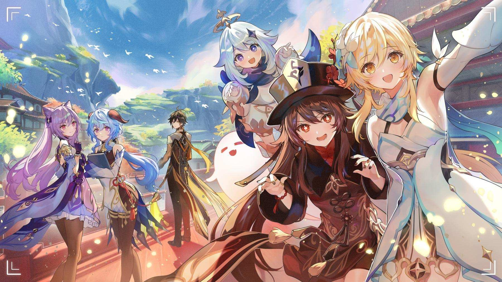在璃月的一個平靜早晨，旅行者和派蒙來到璃月港，準備休息一下，享受片刻的安寧。突然，天空中一道雷光閃過，一聲震耳欲聾的轟鳴劃破了寧靜。旅行者抬頭一看，發現岩神「鐘離」正站在半空中，微笑著看著他們。 「你們兩位，來一場挑戰怎麼樣？」鐘離語氣平和，卻隱隱透著一股威脅感。 派蒙縮了縮脖子，低聲對旅行者說：「這個……不是平常的挑戰吧？」 旅行者不禁感到疑惑，但還是答應了挑戰，沒想到鐘離隨後出現的「挑戰」竟是一場充滿滑稽和誤會的任務。首先，他們必須在不觸發任何岩石的情況下，穿過一片「超級滑溜的岩石區」，不小心就會摔得四腳朝天。接著，他們還要在一座看似平凡的小橋上，避開不知何時會「自動崩塌」的橋板，並運用智謀解開一連串無厘頭的謎題。 這一切看似考驗勇氣和智慧，實則充滿了戲劇性。旅行者在岩石區里不小心滑了一跤，派蒙也因為太過急躁掉進了坑洞，幸好鐘離一直在旁邊微笑觀看，偶爾輕輕提醒，卻始終保持著那種「這是你們的挑戰，我只是個旁觀者」的態度。 最終，兩人成功穿越所有障礙，來到挑戰的終點。鐘離頷首表示：「你們通過了我的挑戰，不過，這只是一場小小的遊戲。」旅行者和派蒙互相對視，明白這場挑戰的目的並非真正考驗他們，而是讓他們體會到「愉快的冒險」才是最重要的。 「岩神真是……太會玩了！」派蒙忍不住嘆息，眼中閃著一絲「報仇」的火花。
提瓦特奇遇記：神秘的月光寶盒
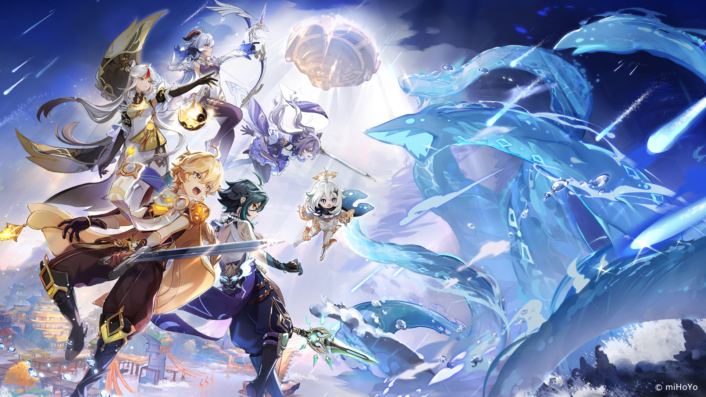一天，旅行者和派蒙來到蒙德的城郊，尋找一個新的冒險機會，突然間，他們在一個古老的樹洞中發現了一個被月光照亮的金色寶盒。盒子上刻著一個奇怪的符號，散發著神秘的光芒。派蒙跳了起來，說道：“這看起來像是某個古代遺跡的寶物！也許裡面有寶藏！” 旅行者小心翼翼地打開寶盒，結果裡面竟然是一張紙條和一塊看似普通的石頭。紙條上寫著：“月光照耀之時，解開封印。”旅行者和派蒙相互對視，兩人都覺得事情不那麼簡單。 於是他們決定等到夜晚，再一次來到那個樹洞，看看這塊石頭究竟有什麼神秘之處。當月光灑下的那一刻，石頭竟然發出了微弱的光芒，並開始發熱。隨著光芒的增強，旅行者意外被吸進了一個奇怪的異次元空間。 在這個空間裡，旅行者遇到了自稱“月光守護者”的神秘人物。這個人看起來像是月神的化身，他微笑著告訴旅行者：“這是月神為選定的旅人準備的試煉，你能通過，才能獲得真正的月光之力。” “試煉？”派蒙不解地問。 月光守護者點點頭：“是的。這場試煉將測試你的智慧、勇氣和毅力。通過後，你將獲得一份無價的寶藏。” 隨後，空間中的景象發生了變化，四周出現了許多迷宮般的通道和解謎題。旅行者和派蒙在月光的指引下，逐一解開了謎題，穿過了隱藏的陷阱，最終來到了一座巨大的水晶塔。 塔頂閃耀著璀璨的月光，而月光守護者也在此等候。旅行者步上塔頂，月光守護者遞給他一顆月亮形狀的水晶，並說：“你通過了試煉，這顆水晶將賦予你與月光相連的力量。” 就在此時，旅行者聽見遠處傳來風神溫迪的笑聲：“哈哈，這個月光試煉真是太有趣了！不過，你們也真夠幸運的！” 原來，這一切竟然是溫迪為了調皮開個小玩笑所設計的“冒險”。他並沒有告訴旅行者，月光守護者其實是自己化身的，而所謂的試煉，其實是一次歡樂的遊戲。 派蒙忍不住搖頭：“這風神！總是這麼捉弄人！” 旅行者拿著水晶，心裡卻感到一種難以言喻的滿足——或許，這才是真正的冒險精神吧！
提瓦特奇遇記：風神的詩意挑戰
某天，旅行者和派蒙正在蒙德的酒館裡品嘗當地的美食，突然門口吹來一陣強烈的風，隨後，風神溫迪出現了。他的臉上掛著一抹得意的笑容，對著旅行者和派蒙揮了揮手，說道：“旅行者，今天我來給你們帶來一場不一樣的挑戰！” “挑戰？”派蒙一聽，立刻警覺起來，“這次又是什麼狡猾的計謀？” 溫迪笑著搖搖頭：“這次可不一樣！今天的挑戰將考驗你們的創意和語言能力，這是一場詩意的競賽！誰能創作出最動人的詩句，就能獲得我的特別獎勳！” 旅行者和派蒙對視一眼，心裡有些不確定，但又不想錯過任何冒險的機會。於是他們答應了溫迪的挑戰。 “來吧！”溫迪捧起一杯酒，將它高高舉起，“這是一次詩的試煉，誰能表現得最好，將能獲得我無上的榮譽——和一個真正的風之禮物！” 派蒙先開口，憑著她對美食的熱愛，迅速地詠出了幾句關於甜甜花釀雞的詩句：“甜甜花釀，香氣撲鼻，味美心怡，大家都愛！” 溫迪笑了，說道：“嗯，派蒙的詩很有趣，但不夠有深度，繼續努力！” 接著，輪到旅行者了。旅行者沉思片刻，開始吟詩：“風起時，隨心飄；夢遠行，隨風舞。每一個心願，都在風中歌唱。” 溫迪聽後，臉上露出讚許的神情：“真不錯！你的詩充滿了自由與夢想，這才是風的真正精神！” 然而，挑戰並不僅限於此。溫迪繼續說道：“這場挑戰還有第二部分，詩句需要引發共鳴，與我們每個人心中最深的情感相連。” 旅行者和派蒙開始試著將自己的感受融入詩句中，逐漸發現，這場比賽不僅僅是文學上的競賽，更像是一次心靈的碰撞。當他們分享自己的詩時，周圍的人都被那份真誠和情感打動，酒館的氣氛也變得溫暖而詩意。 溫迪微笑著，最終宣布：“旅行者，你的詩捕捉到了風的靈魂，今天的挑戰由你獲勝！作為獎勳，我將賜予你風的祝福，一股無形的力量，讓你能更加自由地與世界溝通。” 旅行者和派蒙感謝溫迪，並告訴他，這次挑戰讓他們學會了更多關於自己和這個世界的深刻理解。而溫迪則顯得更加開心，像是完成了一場自己的藝術創作：“無論是挑戰還是遊戲，最終的目的是讓我們記住，那些純粹、真實的情感，才是最珍貴的。” 當夜幕降臨，風神的笑聲隨風傳來，仿佛與整個世界融為一體，而旅行者則帶著風神賜予的祝福，踏上了新的冒險旅程。
提瓦特奇遇記：雷神的遊樂場
在稻妻的某個午後，旅行者和派蒙正在街頭閒逛，享受著難得的平靜。忽然，一陣雷鳴劃破了寧靜，天空中雷電交加，一個銀光閃閃的巨大雷球出現，帶著強烈的閃電波動直衝向他們。 “這是什麼？！”派蒙尖叫著，拼命拉著旅行者躲避。 旅行者迅速拔出武器，準備迎接突如其來的威脅。然而，當雷球落地後，它竟然化作了雷神“雷電將軍”的身影，面無表情地站在他們面前。 “旅行者，我有個挑戰要給你。”雷電將軍冷冷地說。 “挑戰？”旅行者和派蒙對視，心中疑惑。 “是的，我的新遊樂場開張了，你們有興趣來試玩嗎？”雷電將軍語氣中的一絲笑意讓人無法忽視。 “遊樂場？”派蒙有些懷疑，疑慮地看著雷電將軍。 “對，遊樂場。”雷電將軍點點頭，隨即一個響亮的雷鳴響起，天空中浮現出一個奇特的閃電迷宮。迷宮四周布滿了雷電陷阱，各種機關密布，看起來既刺激又危險。 “快來吧，這是我親手設計的迷宮，挑戰一下你的智慧和勇氣。”雷電將軍說完，便消失在雷霆之中。 旅行者和派蒙頓時被捲入了這場充滿雷電和陷阱的冒險中。他們一邊解開謎題，一邊小心翼翼地避開不斷閃爍的雷光。途中，他們不僅要避開地面上的雷電陷阱，還得跳過突然出現的雷射和飆升的電流。每當他們成功避開一個陷阱時，雷電將軍的聲音便會從空中傳來：“做得不錯，但這才剛開始。” 然而，隨著挑戰的深入，他們發現這場遊戲並不像表面那麼簡單。旅行者必須運用自己的機智，解開複雜的機關，而派蒙則不斷提供各種「奇怪的解法」，雖然她的方案大多不太實用，但偶爾也會出奇制勝。 最終，當他們成功走出迷宮，雷電將軍出現在他們面前，嘴角微微上揚：“你們還挺能耐，居然在這麼多雷電陷阱中安然無恙。” “這不過是個遊戲吧？”派蒙無奈地撇撇嘴。 雷電將軍點點頭，隨後又轉身走向一旁的雷霆，語氣中充滿了戲謔：“的確，只是個遊戲。但有時候，生活也應該像遊樂場一樣，充滿挑戰和刺激。” 旅行者和派蒙看著雷電將軍消失的背影，相視一笑。儘管這場冒險充滿了驚險與笑料，但他們知道，正是這些奇特的冒險，讓提瓦特的世界變得那麼不可思議。
提瓦特奇遇記：冰神的詩意挑戰
在雪山的深處，旅行者和派蒙來到了一個被冰雪覆蓋的小村莊，這裡的居民過著寧靜的生活。冬日的寒風刺骨，但卻也讓整個村莊充滿了別樣的寧靜與美麗。旅行者打算休息一會兒，順便探索這片未知的土地，然而，剛踏入村莊的廣場，他們便感覺到一股奇異的寒氣籠罩著四周。 忽然，一聲低沉的吟唱從村莊中央的雪山中傳來，隨後，冰霜逐漸升起，整個景象像是被冰封住了一般。派蒙有些不安，問道：“這是…冰神的力量嗎？” 就在此時，雪山上空出現了一道閃爍的光芒，一位身著冰雪長袍的神祇慢慢降臨，她的面容如冰雪一般潔白，正是冰神「神里綾華」。 “你們來得正好，旅行者。”綾華的聲音清冷而優雅，她輕輕揮手，四周的冰雪似乎都聽從了她的指令。 “冰神，您有何指示？”旅行者謹慎地問。 綾華微微一笑：“其實，我只是想和你們來一場挑戰，看看你們是否能夠解開我設下的謎題。” “謎題？”派蒙一臉興奮，“我喜歡解謎！” 綾華輕輕點頭，隨即在空中劃出一條冰雪的軌跡。隨著她的手指舞動，冰雪中逐漸顯現出一道巨大的詩篇，每一行文字都冰冷而堅硬。她語氣平靜地說：“這是《冰霜之詩》，只有真正理解冰雪之美，才能破解其中的奧秘。” 詩篇中每一行都是一個謎語，解開這些謎語將使冰雪解開封印，帶來通往寶藏的道路。旅行者和派蒙立即開始挑戰，從詩篇的第一行開始解讀：“白雪飄舞，凝結成夢，何物能不變形？” “這個我知道！”派蒙興奮地跳起來，“應該是‘冰’，因為冰雪不會變形，直到融化！” 旅行者微笑著點頭，說：“很好，派蒙，接下來是第二行。”他們繼續解謎，謎語越來越複雜，然而每次解開，周圍的冰雪便會有一部分開始消散，露出一道道光芒。 最終，當最後一個謎語解開時，冰雪全數消散，露出了一個璀璨的冰晶寶盒，內裡閃耀著神秘的光芒。綾華輕輕一揮手，寶盒打開，裡面並不是真的寶物，而是一枚冰雪晶石，上面刻著一行詩句：“真正的寶藏，是理解與挑戰的過程。” 綾華微笑著看向他們：“你們成功了，這是你們應得的獎勳。挑戰並非只是結果，而是你們的心境與堅持。” 派蒙看著那枚晶石，笑著說：“原來挑戰才是最有價值的東西！這真是太有趣了！” 旅行者點點頭，心中明白，這場冰雪挑戰不僅是一次冒險，也是一場關於心境和思維的深刻體悟。隨著綾華的告別，他們踏上了新的旅程，帶著不僅是冰雪晶石，還有更多的智慧與啟示。
提瓦特奇遇記：風花之舞
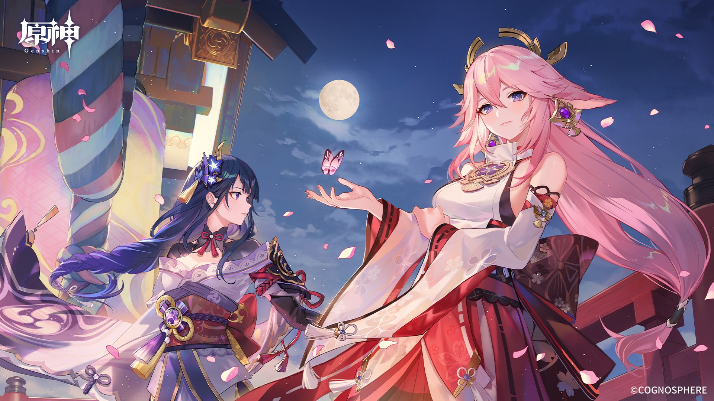某個春意盎然的日子，旅行者和派蒙來到蒙德，準備參加一個盛大的節日——「風花節」。這是蒙德最具特色的慶典之一，當地人會在這個時候放風箏、跳舞、互贈花束，還有一場盛大的「風花之舞」表演，這一切都讓人期待不已。 “哇！這裡好熱鬧啊！風花節真的是蒙德最美麗的時刻！”派蒙興奮地說，跳著小舞步。 旅行者點點頭，也感受到了這股歡樂的氛圍。然而，就在他們沉浸在節日的喜悅中時，突然有一陣強風掠過，天空中的風箏隨風搖曳。隨著風的吹拂，一個身影出現在人群中——那是一位熟悉的身影，蒙德的風神「溫迪」。 “嘿嘿！這是風花節的最高點，怎麼能少了我呢？”溫迪悠然地飛來，手中拿著一束盛開的風花，微笑著看著旅行者。 派蒙忍不住嘲笑道：“溫迪，你可是風神，這樣的節日怎麼能少了你？你這次有什麼奇怪的計劃嗎？” 溫迪眨了眨眼：“奇怪的計劃？當然是風花之舞！我準備好了新舞步，這不僅是舞蹈，還是一場對風神真正的考驗！” 旅行者和派蒙對視，心中都有些疑問。風花之舞是一個大眾慶典，大家都會跳，但聽起來，溫迪似乎想做點不同的事情。 隨著音樂響起，溫迪向大家展示了他所謂的「風花之舞」——這不僅僅是跳舞，還包含了各種風的操控。他用風的力量讓自己在空中旋轉，並利用風花的飄動來製造出一場奇妙的視覺效果。隨著他的舞步，風花在空中舞動，像一場美麗的風暴，將所有觀眾的目光吸引過來。 “哇！這是什麼？他竟然在用風來跳舞！”派蒙瞪大了眼睛，難以置信。 旅行者也驚訝於溫迪的技巧，他不僅在空中翩翩起舞，還能創造出各種風的幻象，彷彿整個蒙德都沉浸在他的舞蹈中，所有的風似乎都在跟他共舞。 然而，隨著舞蹈的進行，溫迪的動作越來越快，風的力量也變得越來越強烈，天空中的風箏被吹得四處亂飛，甚至有些居民的帽子和衣物也被風帶走了。派蒙慌亂地抓住自己的帽子：“溫迪！你這樣跳舞會出事的！” 溫迪聽見了派蒙的聲音，停下舞步，微微一笑：“放心吧，這只是我小小的試驗。這樣的風花之舞，並不僅僅是觀賞，它是讓人感受風的力量，並與風融為一體。” 隨著溫迪的話音落下，他輕輕一揮手，所有的風逐漸平息，風花再次輕柔地飄落。場面回到了寧靜，大家都露出了微笑，紛紛向溫迪表示感謝。 “嗯，這真是一次與風的心靈共舞！”旅行者感慨道。 “溫迪你真是太會玩了！”派蒙忍不住大笑。 溫迪一邊收起風花，一邊悠然地說：“這不僅是一次舞蹈，更是一場冒險。風的力量，能帶領我們去探索未知的世界，而這次的風花之舞，讓我再次體驗了和風共舞的樂趣。” 隨著風花節的結束，旅行者和派蒙留下了美好的回憶，而溫迪則繼續帶著他的風花，悠閒地飄然而去，仿佛他永遠是那個輕盈、自由的風神。
提瓦特奇遇記：深海的秘密
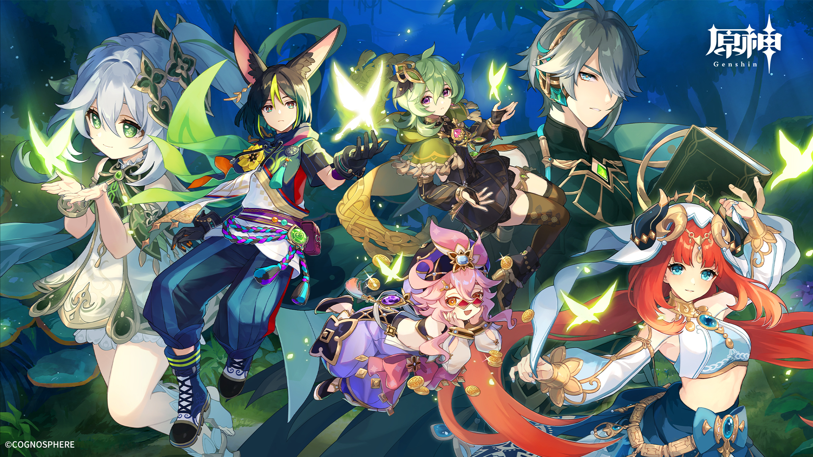某個陽光明媚的下午，旅行者和派蒙來到了璃月的海邊。這裡的海水清澈見底，海風輕拂，讓人心曠神怡。旅行者決定休息一會兒，享受一下海邊的美景，然而，他們剛一踏上沙灘，便聽見了遠處傳來的水面異響。 “聽起來像是有什麼東西在水下活動。”派蒙好奇地說，“我們去看看嗎？” 旅行者點點頭，兩人便朝著水面走去。就在這時，他們發現了一個奇怪的現象：海浪中隱隱透出一道幽藍的光，彷彿有什麼東西在海底深處閃爍。 “這是…什麼？”旅行者皺起眉頭，指著那道光。 派蒙困惑地看著光芒，說：“感覺像是某種神秘的寶物，但我們要怎麼得到它？” 就在他們討論的時候，突然，海面劇烈翻動，一位身穿海藍色長袍的神秘人物從海中浮現，她的眼中閃爍著深邃的光芒，正是「海神」——「納瓦」！ “旅行者，派蒙，為了測試你們的勇氣與智慧，我將帶你們進入海底，揭開深海的秘密。”納瓦的聲音帶著一股神秘而平靜的氣息。 “海底？”派蒙瞪大了眼睛，“這可是大冒險啊！” 納瓦微微一笑：“別擔心，這不僅僅是冒險，還是一次探險與發現。跟我來吧。” 在納瓦的引導下，旅行者和派蒙被一股奇異的力量牽引著，進入了海水中。隨著他們深入，四周的海水變得越來越清澈，直到他們到達了海底的神秘洞窟。洞窟的牆壁上雕刻著古老的符號，散發著淡藍色的光芒，彷彿隱藏著某種無法言喻的力量。 “這是…海底的神殿？”旅行者驚訝地問。 “沒錯，這是一個失落的文明留下的遺跡，曾經擁有強大力量的海神的聖地。”納瓦解釋道，“這裡隱藏著一個古老的秘密，只有通過挑戰，才能揭開它的真相。” 隨著納瓦的一個指令，海底的水流瞬間變化，陷阱、迷宮和各種障礙出現在他們面前。每一個解開的謎題，似乎都代表著對過去文明的理解和尊重。旅行者和派蒙並肩作戰，穿越錯綜複雜的海底迷宮，解開了古老的謎題。 然而，在最終的試煉中，旅行者必須面對一個奇異的水生生物——一條由海水和能量凝聚而成的巨大海蛇。它不斷地挑戰旅行者的智慧與勇氣，並在每一次的衝突中釋放出強大的水能量。 “這條海蛇似乎是守護著海底秘密的力量。”旅行者凝視著眼前的生物，心中充滿決心。 在一番激烈的對決後，旅行者成功擊敗了海蛇，而洞窟中的最後一道門也隨之打開。門後的寶物並非金銀珠寶，而是一塊刻有古老符文的海晶石，這顆石頭散發出微弱的光芒，彷彿擁有著改變命運的力量。 納瓦微笑著說：“這就是深海的秘密。真正的力量，來自於理解和尊重這片海域的智慧。” 旅行者接過海晶石，心中充滿了對這片海洋深深的敬畏。派蒙則感嘆道：“這次的冒險不僅驚險，還讓我們學到了很多呢！” “沒錯，這是一次難得的機會。”旅行者點頭道，“感謝納瓦神的引導。” 隨著他們離開海底世界，海面上再次恢復了平靜。旅行者和派蒙帶著海晶石，踏上了新的旅程，而這段深海的冒險，則永遠成為了他們記憶中最神秘、最珍貴的經歷。
提瓦特奇遇記：燄火與流星
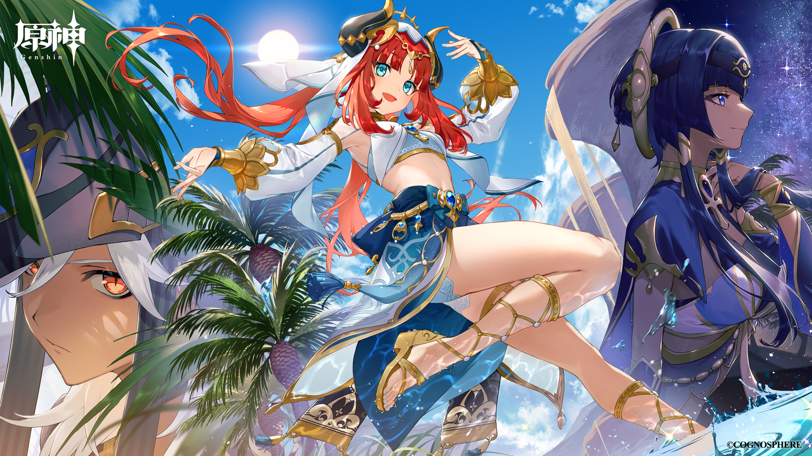在炎熱的夏季，旅行者和派蒙來到了傳說中的「燄火山」，這是一座位於納塔的火山，平日裡隱匿在雲霧中，只有少數人曾經探險至此。這次，他們的目的是探索火山深處的隱秘洞窟，據說那裡藏有一顆神秘的流星碎片，能夠改變星辰的運行。 “這座火山可真不簡單，看來要做好充分準備。”旅行者環顧四周，火山口周圍彌漫著濃煙，岩漿在不遠處流動，熱浪襲來。 “哇，這裡好熱啊！快點找到那顆流星碎片，我可受不了了！”派蒙抱怨道。 他們穿越著熔岩河流和危險的火山裂縫，終於在一處隱秘的山洞中發現了一扇被熔岩包圍的石門。門上刻著古老的符文，似乎是某個失落文明的遺跡。 “這應該就是通往流星碎片的入口了。”旅行者低聲道，準備突破這最後的障礙。 然而，當他們推開石門的一瞬間，一股炙熱的火焰迎面而來，隨後，火焰中逐漸顯現出一個身影——那是納塔的火神「阿博」，他身披火焰，雙眼如燃燒的烈焰，宛如火焰之王。 “旅行者，你來得正巧。”阿博的聲音如同熔岩般低沉，“想要得到流星碎片，就必須通過我的考驗。” 派蒙嚇得往後退了幾步：“考驗？你要考驗我們什麼？” 阿博微笑著，指向洞窟深處：“要獲得流星碎片，你們必須通過這片由火焰與流星鋪成的道路。每一顆流星都是一次考驗，只有成功穿越，才能獲得流星的力量。” 隨著阿博的話音落下，四周的火焰猛然熾熱，天空中飛速下降的流星如雨點般飛來，撞擊在地面上爆發出猛烈的火花。每顆流星都帶著獨特的火焰魔法，它們飛速掠過洞窟，彷彿有著生命，時而爆炸，時而旋轉，形成一條隱匿的火焰之路。 旅行者和派蒙不得不快速反應，避開流星的撞擊與火焰的灼燒。旅行者時而用風的力量引開流星，時而借助岩石的掩護躲避猛烈的火焰。而派蒙則頻繁地提醒旅行者注意後方的流星，雖然她自己總是差點被燒到，但也算是有幫助。 “這真是太刺激了！”派蒙大聲喊道，眼中閃爍著興奮的光芒。 最終，當他們穿越了這片火焰與流星交織的道路，終於來到了洞窟的最深處。那裡，安靜地躺著一顆閃爍著銀光的流星碎片，散發出令人心神震憾的能量。 阿博站在一旁，點了點頭：“你們成功了，這顆流星碎片將賦予你們無窮的力量，能夠引導星辰的運行。” 旅行者伸出手，小心地接過流星碎片。當他握住它的瞬間，整個洞窟仿佛被一股神秘的力量所充盈，四周的火焰和熔岩都顯得格外柔和，流星碎片散發出耀眼的光芒。 “這顆碎片的力量，果然能夠改變一切。”旅行者感慨道。 阿博微微一笑：“記住，這份力量不僅僅來自流星碎片，還來自於你們的勇氣和智慧。” 旅行者和派蒙帶著流星碎片，步出洞窟。雖然火山依然炙熱無比，但他們知道，這段冒險將成為他們旅程中最難忘的一部分。 隨著夕陽的落下，流星的光芒在天際閃耀，他們再次踏上了探索提瓦特世界的旅途。
提瓦特奇遇記：泡泡的魔法故事
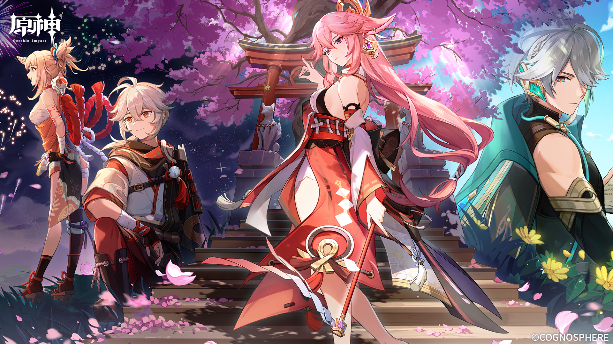旅行者和派蒙這一次來到了蒙德，準備享受一個安靜的假期，順便品嘗當地的美食和風景。正當他們悠閒地走在市集上，突然聽到了一陣嘈雜的聲音。 “怎麼回事？”派蒙皺起了眉頭，四處張望。 旅行者注意到街角的攤位前圍滿了人群，他們好奇地走了過去，看到了一個奇怪的場景。攤位的主人是一位身穿華麗服裝的男子，臉上掛著神秘的笑容，而他面前擺著一個看起來普通無奇的瓶子。 “來呀來呀，誰想要體驗真正的魔法？”這位男子大聲喊道，他的聲音充滿了誇張的吸引力。 旅行者和派蒙對視了一眼，決定走近一探究竟。“派蒙，我們去看看吧，這看起來有點意思。” 當他們走近時，男子將瓶子輕輕一搖，隨即瓶子裡冒出了一個五彩繽紛的泡泡。這泡泡大得令人驚訝，它在空中懸浮，散發著閃爍的光芒，吸引了周圍所有人的目光。 “這是……魔法泡泡？”派蒙瞪大了眼睛，難以置信。 “沒錯！”男子笑著說，“這是我最新研發的魔法泡泡，能夠實現任何你想要的小小願望！只需要用心許願，它就能幫助你實現！” 旅行者挑眉：“任何小小願望？那怎麼可能？” 男子聳聳肩：“你們不信？那就來試試看！” 派蒙迫不及待地伸手指向泡泡：“我希望這個泡泡能變成一隻會說話的小鳥！” 只見泡泡一顫，緩緩向派蒙指的方向移動。出乎意料的是，它竟然變成了一隻小小的金色鳥兒，還在空中唱起了歌！圍觀的人們發出驚嘆的聲音，大家紛紛圍上來，想要試試這個神奇的魔法。 旅行者覺得有些好笑，於是也來了一個願望：“我希望這個泡泡能夠變成一顆飛行的炸彈！” 男子聽後露出一絲不安，但他還是應允了。隨著旅行者的願望，泡泡輕輕一顫，突然像是失控了一樣，變成了一顆閃爍著光芒的巨型炸彈，並且開始在空中快速旋轉！ “哇！這樣不對吧！”派蒙慌忙躲開，尖叫道。 泡泡不斷地在空中發出咔嚓的聲音，越來越大，直至爆炸，竟然變成了一堆滑稽的小玩具和糖果！所有人都哄然大笑，氣氛變得異常熱鬧。 男子緊張地看著這一切：“這……這不是我預期的效果！” 旅行者淡定地看著男子：“看來這泡泡的魔法並不是完全可控的呢。” 派蒙捧著肚子笑得前仰後合：“這比我預期的更有趣！” 突然，泡泡攤位的後方傳來了一聲大叫：“嘿！那是我發明的魔法泡泡！還沒經過充分測試呢！”一個身穿實驗服的少年衝了過來，看起來他是這些泡泡的真正創造者。 他氣喘吁吁地走到攤位前，對著男子大喊：“我就說過，這些泡泡不穩定，魔法能量太過強大，不適合隨便使用！” 男子尷尬地笑了笑，隨後對旅行者和派蒙道歉：“抱歉，這只是個小小的失誤，給你們添麻煩了。” 旅行者笑了笑：“沒關係，反而很有趣！誰能想到泡泡竟然能搞出這麼大的動靜。” 派蒙還在大笑：“真是太刺激了，這泡泡魔法是我見過最有趣的魔法之一！” 少年也無奈地搖頭：“這些泡泡的力量其實不穩定，但我會改進它們的。” 旅行者點點頭，拍了拍少年的肩膀：“加油，希望下次我們再來時，這些泡泡能更安全一些。” 當他們準備離開時，那位男子從背後喊道：“等一下！你們是不是忘了拿泡泡魔法的免費小禮物？” 旅行者回頭一看，那位男子竟然送給他們兩個小瓶子，裡面裝著透明的液體，並附上了一張卡片：“使用時輕輕一吹，隨時隨地讓你們的願望成真！” “哈哈！這也太有趣了吧！”派蒙接過瓶子，開心地跳了起來。 旅行者無奈一笑：“我們應該不會再讓這些泡泡搞出什麼大場面了吧？” “不知道哦，可能會有更多的驚喜！”派蒙笑得開心極了。 帶著奇妙的泡泡魔法瓶，旅行者和派蒙繼續踏上了他們的冒險之旅，心中充滿了對這段奇趣經歷的歡笑與回憶。
提瓦特奇遇記：魔法蔬菜的反叛

旅行者和派蒙這次來到了蒙德的一個農村小鎮，這裡盛產各種各樣的蔬菜，據說當地的農民能夠種出極其美味又充滿魔力的食材。派蒙聽說後，興奮得像個小孩一樣，迫不及待想要品嘗一頓豐盛的蔬菜大餐。 “這裡的蔬菜可不是普通的蔬菜哦，它們擁有神奇的效果！”村莊的老人告訴他們，“比如這些胡蘿蔔，吃了可以提高視力；這些番茄，吃了能讓你瞬間充滿活力！” 派蒙驚訝地瞪大了眼睛：“哇，這真是太棒了！我能吃個十顆胡蘿蔔嗎？” 旅行者笑著搖搖頭：“你可要小心點，聽起來這些蔬菜可不太簡單。” 然而，正當他們準備品嚐這些神奇的蔬菜時，村子外突然傳來了大聲的抗議聲。旅行者和派蒙跑到村子廣場，只見一群蔬菜正在高聲喊叫，穿著自製的布條，揮舞著小旗子！ “革命！我們要自由！”一根胡蘿蔔振臂高呼。 “我們要平等的待遇！”一顆大番茄也在一旁叫喊。 旅行者和派蒙愣住了：“這……是蔬菜在抗議嗎？” “沒錯，”村民中的一個小女孩笑著解釋道，“這裡的蔬菜，經過特殊的魔法灌輸後，變得有了自己的意識。它們其實並不想被吃掉，它們想要過正常的生活。” 派蒙忍不住笑了出來：“這真是太荒謬了，居然有蔬菜開始抗議了！” 不過，旅行者心中感到有些不對勁：“如果這些蔬菜有自己的意識，那麼它們會不會變得更強大，甚至對村子構成威脅？” 就在這時，村民老爺爺走了過來，搖頭苦笑：“其實，我們早就知道它們會有這一天。這些蔬菜經過幾個月的魔法灌輸，它們的智力和情感逐漸覺醒了。現在它們想要的是和平共處，並不想成為食物。” 旅行者思考了片刻，然後指向那些正在抗議的蔬菜：“那我們該怎麼辦？能讓這些蔬菜平息它們的情緒嗎？” 小女孩眨了眨眼：“我們想了個辦法——為了讓蔬菜們理解，人類和蔬菜可以達成一個協議。只要你能幫助它們完成一個任務，它們會答應不再抗議，並且和平共處。” 旅行者點點頭：“我來試試。” 小女孩告訴旅行者，這些蔬菜要求的是一個非常特殊的東西——“真心的願望”。它們希望人類能夠許下對蔬菜的尊重和愛護，而不是只把它們當作食物。旅行者和派蒙便決定幫助它們達成這個心願。 於是，旅行者和派蒙開始和這些反叛的蔬菜進行談判，他們提出了一個讓所有蔬菜都能接受的協議——人類將不再輕易把它們當作食物，而是將它們視為一種珍貴的生命。並且，村民們承諾會為它們建一個蔬菜花園，讓它們自由生長。 隨著協議的簽訂，蔬菜們的抗議聲逐漸平息，並且開始高興地跳起了舞蹈。那些胡蘿蔔和番茄似乎也松了一口氣，甚至開始跟旅行者和派蒙玩起了捉迷藏。 “哇，這些蔬菜還挺有趣的！”派蒙笑得直不起腰來，“我們不僅解決了問題，還交了不少新朋友！” 旅行者微微一笑：“有時候，解決問題的方式不一定是強硬的對抗，反而是找到一個雙方都能接受的平衡點。” 就在他們準備離開時，村民老爺爺送給了旅行者一大籃魔法蔬菜：“這些蔬菜將不再反抗，請你們帶回去，它們會帶給你們不少驚喜。” “謝謝你們幫助我們！”小女孩也向他們揮手告別。 旅行者和派蒙帶著這些特別的蔬菜，開心地踏上了他們的冒險之旅，這次的經歷不僅讓他們領悟到與他人和諧相處的重要性，還讓他們明白了即使是最普通的事物，也可能藏著意想不到的魔法和故事。
提瓦特奇遇記：飛天馬桶的冒險
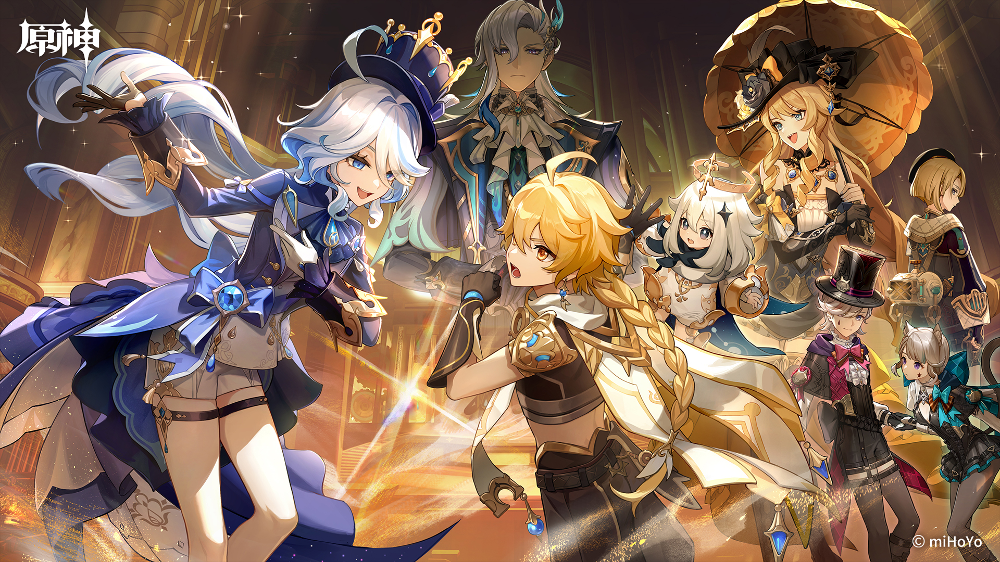旅行者和派蒙這次來到了璃月，這座古老而充滿繁華的城市讓他們充滿了好奇。正當他們漫遊在熱鬧的市集時，一個古怪的小攤位引起了他們的注意。攤位上掛著一個金光閃閃的標語：“飛天馬桶！擁有前所未有的飛行體驗！” “飛天馬桶？”派蒙瞪大了眼睛，“這是什麼新奇玩意兒？” 旅行者也忍不住走了過去，攤位上的老闆是一位白鬍子、戴著圓頂帽的老人，看起來既聰明又神秘。他正在對一群圍觀的人展示他的最新發明——一個金光閃閃的馬桶，馬桶上安裝了奇怪的機械裝置，看起來像是某種飛行器的底座。 “各位！快來看看我這最新的發明！這可是能讓你飛上天的飛天馬桶！”老人激動地說，語氣中充滿了自豪，“誰不想體驗一下，坐在馬桶上飛行呢？它將改變你對廁所的看法！” 派蒙瞪大了眼睛，對旅行者說：“這怎麼可能？你怎麼能坐在馬桶上飛呢？” 旅行者也有些困惑，但他們的好奇心還是讓他們決定嘗試一番。他們走向攤位，旅行者笑著對老人說：“我們願意試試看，這可真是個奇特的發明。” “哈哈，這正是我為你們準備的！”老人笑著指引他們坐上飛天馬桶，“只需輕輕一踩這個踏板，馬桶就會開始起飛！” 旅行者和派蒙一開始有些猶豫，但看到周圍圍觀的人群都充滿期待，於是他們決定不讓自己錯過這個獨特的體驗。 旅行者坐上馬桶，隨著他腳下的踏板輕輕一踩，馬桶突然發出一聲巨響，接著開始震動，隨著一股強勁的氣流，馬桶竟然真的飛了起來！ “哇！這是真的！”派蒙大叫，她看著旅行者被馬桶帶著飛向天空。 旅行者也驚訝地抓住了馬桶的邊緣，心跳加速：“這真是…太刺激了！” 馬桶開始急速上升，帶著旅行者直衝雲霄，穿越了璃月的高樓大廈，掠過了廣闊的海洋，甚至飛過了壯麗的山脈。空中風速極快，但馬桶穩穩地浮在半空中，似乎完全不受任何干擾。 “這根本不像我見過的任何飛行工具！”旅行者興奮地喊道，“這馬桶太神奇了！” 然而，就在這時，馬桶突然開始顫抖，並發出了一陣怪異的聲音。隨後，機械裝置發出一聲尖銳的警報，並開始失控地向下墜落。 “啊！馬桶要掉下去了！”派蒙驚慌失措地大叫。 旅行者立刻抓住身邊的控制桿，試圖讓馬桶重新穩定。他將控制桿往前推，馬桶的速度再次加快，成功避開了災難。他駕駛著飛天馬桶，彷彿成為了天際的一位駕駛員，無論是上下翻轉還是急速轉彎，都能夠應對自如。 終於，旅行者成功將馬桶帶回了地面，安全著陸在璃月的廣場上。雖然他們的服裝被風刮得有些凌亂，但他們的心情卻無比激動。 “這可真是一次超級刺激的冒險！”派蒙興奮得跳了起來，“我真沒想到會坐在馬桶上飛！這次體驗可以寫進我們的冒險日誌！” 旅行者擦了擦額頭的汗水，笑著說：“我也沒想到，飛天馬桶居然這麼驚險又有趣。” 就在他們準備離開時，老闆走過來，滿臉堆笑：“謝謝你們的合作，這次的演示非常成功！作為感謝，我想送你們一個終極版的飛天馬桶，這款馬桶可以輕鬆飛越所有城市，甚至能達到月球！” 旅行者和派蒙對視了一眼，兩人都愣住了。 “月球？”派蒙半信半疑，“這馬桶也太厲害了吧！” 旅行者也笑著搖頭：“也許我們應該帶著它，去做一次真正的星際冒險！” 最後，帶著飛天馬桶和滿滿的笑聲，旅行者和派蒙踏上了繼續冒險的路程。這段奇特的飛行經歷，將會是他們旅程中最難忘的回憶之一。
提瓦特奇遇記：薩哈隸的失落傳送門
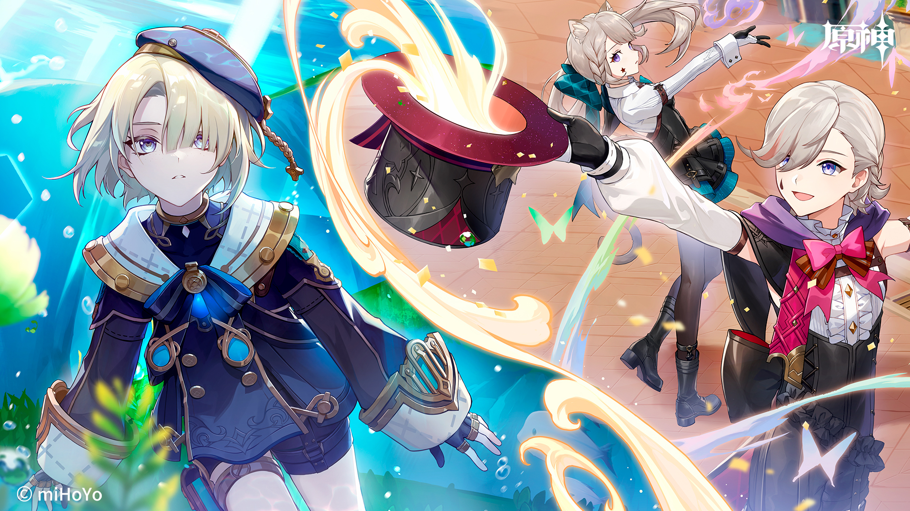旅行者和派蒙這次來到了薩哈隸，一個位於沙漠的神秘王國。這裡的氣候炎熱，沙丘綿延不斷，但卻也充滿了未知的冒險與秘密。據說，在薩哈隸的某個角落隱藏著一座古老的傳送門，它能通往未知的世界，甚至可以帶人穿越時空。 “這個地方聽起來像是隱藏了某個寶藏。”旅行者興奮地說。 “對啊！而且我們這次可要小心點，這些沙漠可不簡單。”派蒙有點擔心地望著遠方的沙丘。 他們穿過了炎熱的沙漠，來到了一座廢棄的古老城市。這裡的建築大多被沙漠掩埋，只剩下些許殘垣斷壁，但依稀可見這座城市曾經的輝煌。旅行者和派蒙在這座城市的中心找到了所謂的“傳送門”，它是一扇古老的石門，上面刻滿了奇異的符文，散發著微弱的光芒。 “這就是傳送門？”派蒙有些不確定地問，“看起來沒什麼特別的。” 旅行者仔細查看門上的符文，發現其中似乎隱藏著某種魔力。他伸手觸碰其中一個符文，突然，石門發出一陣低沉的轟鳴聲，符文開始發光，隨後，石門慢慢開啟。 “哇！這真的是傳送門！”派蒙瞪大了眼睛。 但當門完全打開的時候，卻只見到一片漆黑的空間，裡面彷彿隱藏著無數未知的危險。 “這裡面…會不會很危險？”派蒙有些害怕地縮了縮脖子。 旅行者深吸了一口氣：“我們沒辦法知道，除非進去看看。” 他們互相點了點頭，決定進入這個神秘的空間。一進入，眼前的景象讓他們瞬間驚呆了。這裡並不是一個普通的空間，而是一個充滿沙漠元素的異次元世界，無數的沙粒在空中漂浮，天空被一層金色的沙塵覆蓋，偶爾能看到巨大的沙漠巨獸穿越而過。 “這是…另一個世界？”派蒙驚訝地問。 旅行者皺起了眉頭：“這看起來像是沙漠的另一面，但又不像。” 突然，他們聽到了一個低沉的聲音：“你們來得正好。” 一個身影從沙塵中走了出來，穿著古老的沙漠長袍，臉上戴著一個面具。這位神秘人物的出現讓旅行者和派蒙都感到一絲不安。 “你是誰？”旅行者警覺地問。 那人笑了笑，語氣平靜卻充滿力量：“我是這裡的守護者，這座傳送門的守護者。你們不該隨便進入這個地方。” “我們並不知道這裡是什麼地方。”派蒙有些緊張，“我們只是好奇，這傳送門到底能帶我們去哪裡？” 守護者的目光變得嚴肅：“這個傳送門，是通往各種未知世界的門戶。每個世界都有不同的挑戰和危險，並不是每個人都能安全回來。” 旅行者點點頭，心中已經產生了疑問：“那你為什麼要守護這個傳送門？你究竟是誰？” 守護者深深地看了他們一眼，然後抬起手，指向空中：“我曾是這個世界的王者，這片沙漠曾經是我的王國。但有一天，這扇門被無數的強大存在打開，帶來了毀滅性的混亂。我被迫封印了這個門，並成為它的守護者，直到有一天，我能找到合適的人來重啟這個門，重新恢復這個世界的秩序。” 旅行者聽後若有所思：“所以，這扇門已經被封印了很久，而你一直在守護它？” 守護者點點頭：“是的，我的使命就是防止那些不應該進入的人進來。但現在，傳送門似乎再次被打開，世界的秩序也許會再次改變。” “那麼我們能不能幫助你重啟這扇門，讓這片沙漠恢復秩序？”旅行者問。 守護者沉默片刻，然後點了點頭：“或許你們能夠幫助我們重建這個世界，但這並不容易。你們需要通過一系列的試煉，證明你們有資格開啟這扇門。” 旅行者和派蒙互相看了看，然後毫不猶豫地回答：“我們願意接受挑戰！” 於是，守護者帶領他們進入了這片異次元沙漠的深處。在這裡，他們將面對無數的考驗——從解開古老的謎題，到與沙漠巨獸搏鬥，再到穿越重重沙塵暴和險峻的沙丘。每一個挑戰都讓他們的智慧和勇氣受到考驗，也讓他們逐漸明白，這扇傳送門並不是通往未知的道路，而是通往自己內心深處的考驗。 最終，當他們成功完成了所有挑戰，守護者微笑著說：“你們通過了試煉，擁有了重啟這扇門的資格。” 旅行者和派蒙站在傳送門前，感受到其中蕴藏的巨大力量。隨著一聲轟鳴，門再次開啟，帶著一片光芒，將他們帶向了未知的世界。 “這次的冒險真是驚險！”派蒙興奮地說，“但是，我還是有點害怕，不知道我們會去哪裡。” 旅行者看著派蒙，微微一笑：“無論去哪裡，最重要的是我們一起面對。” 隨著傳送門的光芒吞噬了他們，兩人準備迎接全新的冒險，這扇門不僅打開了未知的世界，也打開了更多的機會與挑戰。
提瓦特奇遇記：不速之客的天才甜點師

這一次，旅行者和派蒙來到了蒙德，想享受一下這座城市著名的美食。正當他們徜徉於市集，流連於各種精緻小吃攤時，忽然一陣異常甜美的香氣撲鼻而來，讓他們的腳步不由自主地停了下來。 “這是…什麼味道？”派蒙嗅了嗅空氣，立刻眼睛一亮，“這好像是…巧克力！” 旅行者也忍不住被香氣吸引，走向香氣的來源，發現了一個小攤位，攤位上擺滿了各種各樣的精緻甜點，巧克力、果仁糖、瑪德琳蛋糕……每一樣看起來都像是藝術品。 攤位的主人是一位穿著白色圍裙、笑容滿面的年輕男子，他正在用巧克力和奶油製作一個巨大而精美的甜點塔。他的手法熟練而流暢，每一個動作都彷彿在跳著一支優雅的舞蹈。 “哦！這位甜點師看起來很有天賦啊！”派蒙瞪大了眼睛，忍不住咽了咽口水，“這麼美味的香氣，真是讓人忍不住想要品嘗！” 旅行者笑了笑，向攤位走去：“您好，看起來您的甜點很出色，我們能不能試一試？” 年輕的甜點師微笑著抬起頭：“當然可以！這是我最新研發的‘夢幻巧克力塔’，每一口都能帶你進入甜蜜的夢境。” 他把巧克力塔切成小塊，輕輕遞給旅行者和派蒙。旅行者嘗了一口，立刻被那濃郁的巧克力味道所征服，巧克力的細膩與奶油的香滑交織在一起，簡直無法用語言形容。 “這…真是太好吃了！”旅行者忍不住讚嘆，“每一口都像是融化在口中，簡直是人間美味！” 派蒙也開心地拿起一塊巧克力：“這真是比蒙德的風景還美味！我願意把這甜點帶回去，做我的早餐、午餐、晚餐！” 年輕的甜點師看著他們開心的樣子，輕笑了一聲：“如果你們喜歡，我其實還有更多有趣的甜點。比如這個——‘飛翔的果仁餅’！這不僅是甜點，它還能根據你心情的不同，讓你感受到不同的口感。” “哇！這聽起來像是魔法！”派蒙瞪大了眼睛，“它怎麼能這麼神奇？” 甜點師神秘地笑了笑：“這些甜點可是我親手創作的，所有的味道都源自於我對食材的理解和感悟。這些甜點能根據品嚐者的心情、情感來調整味道，給你一種心靈的滿足感。” 旅行者聽後也覺得非常驚訝：“這樣的甜點，確實是超出了我的想像。” “我可以試試那個‘飛翔的果仁餅’嗎？”派蒙興奮地問道。 “當然可以！”甜點師從旁邊的桌子上拿起一塊果仁餅遞給派蒙。 派蒙拿起餅乾，輕輕咬了一口，突然，她的身體輕微一顫，接著就感覺到一股奇異的感覺——就像是自己變得輕盈，像在空中飄動一樣！ “哇！我變得輕飄飄的了！”派蒙高興地揮動雙臂，像是要飛起來一般，“這是怎麼回事？這餅乾真的能讓我感覺到飛行！” 甜點師輕笑著解釋：“這就是‘飛翔的果仁餅’的魔力。它根據品嚐者的情感來釋放甜點中的能量，讓你感受到飛翔的自由。” 旅行者也忍不住試了一口，果仁餅的香脆與果香交織在一起，令他感到一陣愉悅，整個人也不由自主地輕鬆起來。 “這真的太神奇了！”旅行者感嘆道，“我們平時吃甜點，沒想到竟然能體驗到這樣的感覺。” 就在這時，一個調皮的聲音傳來：“嘿！別忘了我還有更有趣的甜點！” 回頭一看，只見一個小女孩走到攤位前，笑容滿面地看著他們：“這是我從他這裡學來的技巧，這些甜點真是太棒了！” “哎呀，還有一位小甜點師？”派蒙驚訝地問。 “哈哈，這是我的學生，”年輕的甜點師笑著解釋，“她最近也在學習如何製作能夠帶來不同感受的甜點，未來她會成為提瓦特最厲害的甜點大師。” 旅行者和派蒙點了點頭，心裡充滿了對這位天才甜點師的敬佩。 “我們的冒險之旅也許不止於戰鬥和解謎，還有這些小小的奇蹟，”旅行者感慨道，“今天的經歷真是太美妙了。” 派蒙開心地笑著：“下次我們來蒙德，一定要再來這裡嚐嚐更多的奇妙甜點！” 這一段奇特的甜點冒險，不僅讓旅行者和派蒙享受了美食，也讓他們見識到了魔法與食物的奇妙結合。而這位年輕的甜點師，無疑也為提瓦特帶來了一份甜蜜的驚喜。
提瓦特奇遇記：消失的冰淇淋王國
旅行者和派蒙這次來到的是蒙德以外的一個偏遠小村莊，這個村莊隱藏在一片美麗的森林深處，村民們生活樸素，與外界的聯繫很少。然而，村子裡卻有一個傳聞，說是這裡擁有世界上最好吃的冰淇淋——而且它不僅是冰淇淋，它還能解開心靈的枷鎖。 “聽起來像是某種奇蹟啊！”派蒙興奮地跳起來，“這麼神奇的冰淇淋一定得嘗一嘗！” 旅行者也對這個傳聞充滿了好奇，於是他們決定進入村子，尋找這家神奇的冰淇淋店。 當他們走進村莊時，發現村子裡的景象和傳聞中的完全不符。四周寂靜無聲，街道上幾乎沒有行人。唯一一間店鋪的門前掛著一塊“閉店”牌，顯得異常冷清。 “這不太對勁。”旅行者皺眉，“看起來像是這家冰淇淋店已經關閉了很久。” “難道它真的是…消失了？”派蒙也有些疑惑。 正當他們打算離開時，突然從店鋪裡傳來了一聲微弱的冰淇淋機運轉聲。旅行者轉頭一看，發現店門微微開著，裡面隱約可見一個身影。 “有人在裡面嗎？”旅行者走近，輕輕敲了敲店門。 一位年邁的老人緩緩走出來，臉上掛著若有所思的笑容。她的頭髮雪白，戴著一副圓眼鏡，看起來像是個經歷過無數歲月的智者。 “你們是來找冰淇淋的吧？”老婦人輕聲問，聲音柔和而又神秘。 旅行者點點頭：“我們聽說這裡的冰淇淋非常特別，能夠解開心靈的枷鎖，我們來看看是否能嘗試一下。” 老人微微一笑：“你們來得正好。其實，我的冰淇淋並不僅僅是食物，它是通往記憶與感情的橋樑。吃過它的人，會重新找回失落的感覺。” “失落的感覺？”派蒙困惑地問，“這聽起來有點神秘，冰淇淋怎麼會有這種力量？” 老人向他們示意讓他們進來，然後輕輕關上門：“來吧，我來為你們準備一份特製的冰淇淋。這並非普通的甜點，它將帶你們穿越過去的回憶。” 旅行者和派蒙坐下後，老人開始準備冰淇淋。她將各種奇特的食材放入機器，隨後將它們打發成光滑的冰淇淋。這些冰淇淋的顏色從金黃到淡藍不等，彷彿包含了所有的季節。 當她將冰淇淋端到他們面前時，旅行者注意到，這些冰淇淋不僅僅是美味可口，它們似乎散發著一股神秘的力量，讓人無法抗拒地想要品嚐。 “這冰淇淋，看起來真的是無與倫比。”旅行者低聲說。 “吃了它，你們將體驗到自己最深處的感覺。”老人語重心長地說。 旅行者和派蒙猶豫了一會兒，然後各自拿起一勺冰淇淋，輕輕放入嘴中。瞬間，他們感覺到一股奇妙的清涼感從嘴裡蔓延到全身，這不僅僅是口感上的愉悅，而是從心底升起的一股溫暖。 突然間，旅行者的眼前出現了一些模糊的影像。他看到了自己從小到大的回憶，那些曾經的快樂、悲傷和一切他曾經遺忘的情感逐一浮現。每一口冰淇淋，都讓他感覺更加真實，他彷彿重新回到了那些時光。 派蒙的眼中也閃過了淚光，她低聲說：“這是…我從來沒有想過的感覺…這是我失去的記憶嗎？” 老人靜靜地看著他們：“這些回憶與情感，都是你們自己曾經擁有的，這份冰淇淋只是幫助你們重新找回它們。” 隨著冰淇淋的最後一勺被吃下，旅行者和派蒙的心情變得異常輕鬆，仿佛所有的壓力和困擾都在這份甜美的味道中消失了。 “謝謝您，這真是一種奇妙的經歷。”旅行者感慨道。 “這份冰淇淋的魔力並不來自食材，而是來自心靈。”老人微笑著回答，“它能幫助人們重新連接自己，找到內心深處的平靜。” 旅行者和派蒙感到無比的感激，雖然他們來自不同的地方，但這一刻，他們確實感受到了一種深深的聯繫。老人告訴他們，這家冰淇淋店只會在特定的時間開放，每一個來品嘗的人，都能夠從中汲取力量。 當他們離開店鋪，走進那片寧靜的森林時，他們知道，這次的經歷將成為他們心靈中的一部分，無論未來如何，那份甜蜜的回憶都將永遠伴隨著他們。 “這真是一次奇妙的冒險。”派蒙感嘆道。 旅行者微笑著點頭：“有時候，真正的奇蹟就藏在這些小小的瞬間中。”
提瓦特奇遇記：失控的龍舌蘭酒風波
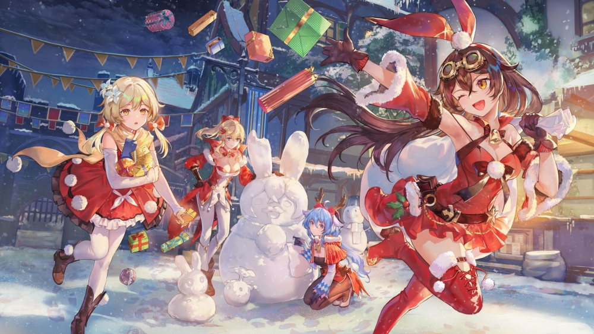旅行者和派蒙這次來到蒙德，正值當地的「龍舌蘭酒節」盛大開幕。這是一個每年一度的節日，慶祝酒廠的豐收和人們對美好生活的向往。街頭擺滿了色彩繽紛的攤位，周圍洋溢著歡樂的氣氛。派蒙一看到熱鬧的景象，立刻就興奮得跳了起來：“哇！這裡好熱鬧！我聽說今年的龍舌蘭酒節有很多新奇的活動，咱們也該來參加一下！” 旅行者微笑著點點頭，隨著派蒙的步伐走向了其中一個熱鬧的攤位。這個攤位上擺滿了各種瓶裝的龍舌蘭酒，每瓶酒的標籤上都印著精美的圖案，閃爍著金色的光芒。 正當他們在攤位前停下時，攤位的老板是一位身穿華麗服飾的中年男子，他看起來十分自信且帶著點神秘的笑容。 “歡迎光臨！來一瓶我們最新釀造的龍舌蘭酒吧！”他用一種富有吸引力的語氣招呼道，“這可是我家獨門秘方，品嚐過的人都說無法忘懷！” 派蒙眨巴著眼睛，迫不及待地問道：“這是什麼味道的酒？有沒有特別的效果？” 老板神秘一笑：“這酒不同於其他酒，它能讓你體驗到一種前所未有的感覺。不過，你們必須要勇敢一點。” 旅行者聽後微微皺眉，總覺得這位老板有些太過神秘，但對這種獨特的酒也有些好奇。於是他決定和派蒙一起品嚐。 老板端來兩杯酒，微微一笑：“來，祝你們能體驗到無與倫比的風味。” 旅行者和派蒙各自端起酒杯，一同喝下。剛入口時，酒液的濃烈味道讓他們微微一愣，隨後一股奇妙的溫暖感覺迅速蔓延至全身，讓兩人都不由自主地露出了愉快的笑容。 “哇，這味道…好像是天上的星星也能品嚐到的甜美！”派蒙眼睛一亮，感覺整個人都輕飄飄的，“我感覺自己能飛起來了！” 旅行者也笑著點點頭：“這酒…確實有點特別。” 然而，正當他們享受酒的獨特魅力時，突然，整個市場的氣氛開始變得有些異常。人們的步伐開始變得不穩，言談也變得模糊不清，街道上各式各樣的摊位、標牌和人群開始漂浮，像是某種幻象。旅行者猛地站了起來：“這是怎麼回事？我們…是不是喝多了？” 派蒙也有些不知所措：“我感覺地面開始變得不太穩！這酒…好像有些問題！” 就在此時，突然間，一條巨大的龍影出現在他們眼前，盤旋在空中，像是穿越了時空般迅速降臨。那條龍形態詭異，身上披著閃亮的酒瓶標籤，看起來既熟悉又不尋常。 “你們…你們這群不小心的冒險者！”龍的聲音不再是威脅，而是帶著一絲微妙的戲謔，“怎麼這麼不小心，竟然喝下了我們酒廠的‘失控龍舌蘭’！” 旅行者瞪大了眼睛：“失控…龍舌蘭？這是怎麼回事？” 那條龍苦笑著：“這款酒本來是要帶給人們極致的幸福感，但由於一點小小的調皮，它的力量失控了。現在，你們喝下它後會進入一個‘龍舌蘭幻境’，只有通過一場小小的挑戰，才能回到現實。” 派蒙聽後嚇了一跳：“這酒…竟然能創造幻境？” 龍得意地笑了：“不過別擔心，這場挑戰對你們來說不會太難。只要你們能找到真正的‘龍舌蘭’心臟，解開其中的謎題，才能回到現實世界。” 旅行者深吸一口氣，瞪大眼睛：“好吧，我們接受挑戰！” 在龍的指引下，旅行者和派蒙開始穿越這片混亂的幻境。街道上的建築像紙牌屋一樣不穩定，空氣中彷彿隱藏著數不盡的謎語和挑戰。每當他們解開一個謎題，周圍的景象便變得更加清晰。而當他們接近龍舌蘭的核心地帶時，幻境中的龍形身影也變得更加明晰，開始為他們指引正確的路。 經過一番努力，最終，旅行者和派蒙找到了“龍舌蘭心臟”，並成功解開了其中的謎題。隨著最後一個謎語的破解，整個幻境像是被打破般，世界恢復了正常，龍的身影也消失在了空中。 回到現實後，旅行者和派蒙都感到一陣虛脫，但也無比興奮。 “這次的經歷太…瘋狂了！”派蒙忍不住笑出聲，“竟然在一場酒的挑戰中穿越了幻境！” 旅行者則擦了擦額頭的冷汗，說：“我倒是覺得，這龍舌蘭酒比任何的冒險都要驚險。” 兩人心有餘悸地走出酒節，心裡卻也對這次奇妙的經歷有著深深的回味。或許，提瓦特的每一次冒險，都充滿了難以預見的驚喜和挑戰，而這一次，確實讓他們大開眼界。
提瓦特奇遇記：神秘的影像畫師
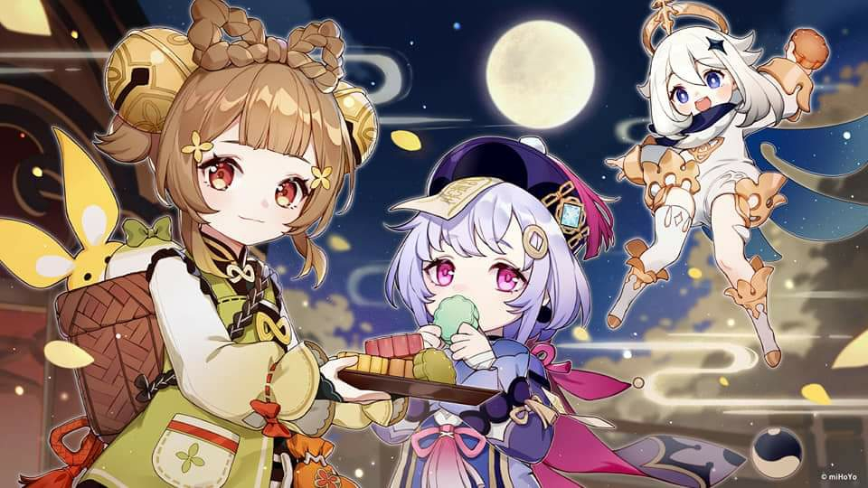這次旅行者和派蒙來到了璃月的藝術街區，這裡以各式各樣的藝術品和精美的手工藝品聞名。街道兩旁是古色古香的畫廊和工作室，琳瑯滿目的畫作、雕塑、陶藝展品讓人目不暇給。 “哇，這裡真是藝術的寶庫！好多畫看起來都像是真實的風景！”派蒙一邊走一邊興奮地看著每一幅畫作。 旅行者微微一笑：“璃月的藝術氣息的確很濃厚，這裡的藝術家們總是能創造出一些驚人的作品。” 突然，他們在一個角落發現了一家不起眼的小畫廊，畫廊的門上掛著一個簡單的標牌，寫著“影像畫師”，沒有多餘的修飾，但卻隱隱透露著一股神秘的氣息。 “這家畫廊看起來有點特別，我們去看看吧。”旅行者說。 進入畫廊後，他們被眼前的景象驚呆了。牆上掛著一幅幅精緻的畫作，每幅畫作看起來都像是某個瞬間的完美定格，仿佛能將人帶入畫中的世界。最讓人震驚的是，這些畫作上的景象似乎不僅僅是靜止的圖像——它們偶爾會輕微移動，像是被賦予了生命。 “這些畫…它們會動！”派蒙瞪大了眼睛，“這…這是怎麼回事？” 正當他們驚訝之際，一位穿著簡單黑色衣服的中年男子走了過來。他的目光深邃，看起來似乎早已看透世事。“你們對這些畫感興趣嗎？”他溫和地問道。 “當然！這些畫作太神奇了！”派蒙迫不及待地問，“它們怎麼會動？這是魔法嗎？” 男子微微一笑：“這不是魔法，而是我的畫作所具備的特殊屬性。我叫墨影，是這些畫作的創作者。” “墨影…你的畫居然能讓畫中的世界栩栩如生。”旅行者驚訝地看著他，“這是怎麼做到的？” 墨影點了點頭：“我的畫不僅僅是表現形式，而是時間與空間的融合。我用畫筆捕捉的不是單純的靜止畫面，而是某一瞬間的動態——這些畫就像是鏡頭，它們能夠捕捉當時的時間流動，並將其定格。” 派蒙聽得一頭霧水：“所以…這些畫是會動的時間影像嗎？” 墨影點點頭：“沒錯。我能捕捉到每個瞬間的變化，並且將其保存下來。這樣，你可以在畫中體驗到畫面背後的故事。” 旅行者感到十分好奇：“那麼，這些畫是不是能帶領我們進入畫中的世界，親身體驗其中的情景呢？” 墨影沉思了一會兒，然後微微一笑：“其實，你們想不想親自體驗一下我的畫作呢？如果你們願意，可以進入一幅畫，親自感受其中的故事。” 旅行者和派蒙相視一眼，心中充滿了好奇。“當然願意！我們很想知道，畫中的世界到底是怎麼樣的！” 墨影帶領他們走到一幅畫前，這是一幅描繪璃月港的風景畫，畫中的港口熙熙攘攘，船隻來來往往，街道上人群來回穿梭，看起來生動而真實。 “這幅畫是我最得意的作品之一。”墨影說，“接下來，讓我們一起進入它。” 墨影揮動手中的畫筆，畫面忽然開始發光，兩人眼前的世界變得模糊，隨後他們被一股柔和的力量包圍，然後感覺到自己仿佛穿越進了畫中。當他們再次睜開眼時，發現自己站在了璃月港的街頭，四周的景象和畫中的景象一模一樣。 “哇！我們真的進來了！”派蒙高興地跳了起來，“這裡就像畫中的世界一樣！” 旅行者也驚訝地四處打量：“這感覺太真實了！我們現在好像成了畫中的一部分。” 他們在畫中的世界漫遊，感受著周圍的熱鬧氣氛。人們在街頭來來往往，商販的叫賣聲、船隻的鳴笛聲、海風的涼爽，都讓他們仿佛真的身處於璃月港的某個瞬間。 然而，隨著他們在畫中探險，發現一些奇怪的事情開始發生：畫中的景象並不像他們想象的那樣穩定，隨著他們的行動，畫面中的人群也開始變得異常，某些物品甚至變得不安定。旅行者和派蒙逐漸意識到，他們並不完全控制這個世界。 “這…怎麼回事？這世界好像不再只是靜止的畫面了！”派蒙有些緊張，“我們該怎麼辦？” 墨影的聲音從畫外傳來：“這就是我的畫作的另一面，雖然它能帶你進入畫中的世界，但這個世界並不完全由你們控制。它是時間的縮影，是瞬間的聚集體。隨著你們的行動，它也會隨之改變。” 旅行者心頭一驚：“我們必須找到一個辦法才能從畫中退出！” 墨影的聲音再次傳來：“只有當你們理解畫中世界的真正意圖，並解開其中的秘密，才能安全地返回。” 經過一番努力，旅行者和派蒙終於發現了畫中的關鍵——每個瞬間的變化都有其背後的意圖，而他們必須遵循畫中的節奏，才可以回到現實。當他們成功解開了畫中的謎題，世界再次變得模糊，隨後他們回到了畫廊中。 “太…太驚險了！”派蒙鬆了一口氣，“我差點就永遠留在那幅畫裡了！” 旅行者也感到一陣後怕：“這畫中的世界真是讓人無法預測。下次還是不要輕易嘗試進入這樣的畫了。” 墨影微微一笑：“每幅畫都有它的秘密，真正理解它的藝術，就能真正感受到它的魅力。” 旅行者和派蒙感謝墨影的指引，並且帶著對這些畫作更深的理解離開了畫廊。他們知道，提瓦特的每一場冒險，都藏著無數未知的驚奇，而今天，他們又多了一份對藝術和時間的理解。
提瓦特奇遇記：閃耀的月光迷宮
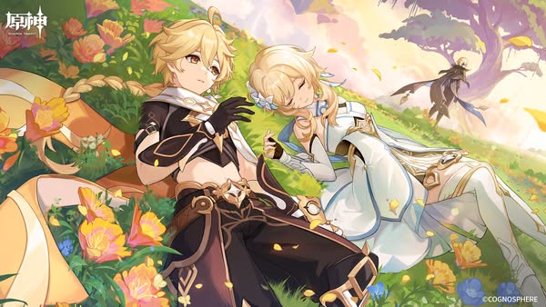這次旅行者和派蒙來到了蒙德的郊外，一個被稱為「月光迷宮」的神秘場所。據說，這個迷宮的入口每年只會在某個特定的夜晚出現，而只有真正的冒險者才能找到通往迷宮的道路。今晚，月光特別明亮，照亮了整片草原，似乎是個探索的好時機。 “今晚的月光真漂亮！看起來特別神秘，真想知道那個迷宮裡到底藏著什麼。”派蒙興奮地說。 旅行者點點頭：“根據傳聞，月光迷宮中隱藏著強大的寶藏和奇異的生物，但進入其中的冒險者少有人能夠全身而退。我们小心點。” 兩人順著一條隱蔽的小徑走去，月光如水，撒在他們的腳步上。隨著他們越走越遠，四周的景象開始變得模糊，迷宮的入口慢慢顯現出來——一扇由古老藤蔓編織而成的巨大門框，閃耀著銀白色的光芒，彷彿邀請他們進入未知的領域。 “這就是月光迷宮的入口嗎？”派蒙激動地問。 旅行者緊握著劍柄，仔細觀察周圍：“看起來確實不簡單，我們還是小心行事。” 隨著旅行者一腳踏入門框，一股神秘的力量立刻將他們包圍。迷宮的大門緩緩關閉，兩人瞬間被困在了一個極為奇異的空間中。四周的景象像是被一層薄霧籠罩，月光從上方射下，照亮了彷彿無盡的石牆和曲折的道路。迷宮的地面覆蓋著閃閃發光的藍色苔蘚，發出微弱的光芒。 “這地方…比我想的還要神秘。”旅行者低聲說，“我們得找出路。” 派蒙四處張望：“我們是進入了迷宮，還是進入了月亮本身的世界？” 正當他們開始深入迷宮時，前方突然出現了一道光，光中出現了一個瘦弱的身影。那是一位穿著古老長袍、面容模糊的老人。他的眼睛散發著冰冷的藍光，似乎在無聲地觀察著兩人。 旅行者警覺地握住了武器：“你是誰？這是什麼地方？” 老人開口，聲音低沉而神秘：“我是這座迷宮的守護者，這裡是由月光和時間編織而成的世界。只有那些能通過我的考驗的人，才能發現真正的寶藏。” 派蒙困惑地問：“那我們該怎麼做？” 老人點點頭：“你們必須找到迷宮中隱藏的‘月光之石’，這顆石頭能夠照亮通往出口的路。只有擁有它的人，才能從這片迷霧中走出。” “月光之石？聽起來像是一顆非常神奇的寶物。”旅行者說，“那我們該從哪裡找？” 老人微微一笑，指向前方：“迷宮是由一系列錯綜複雜的通道和謎題組成，月光之石也藏匿其中。你們必須解開迷宮的謎語，才能一步步接近它。但請記住，這不僅是一次物理上的探索，更是對你們心智的考驗。” 說完，老人消失在了迷宮的陰影中，留下兩人站在那裡。 “這個迷宮看起來更難對付了。”派蒙說，“不過，我還是挺想找到那顆月光之石的！” 旅行者沉思片刻：“我們先從這條路開始，希望能找到一些線索。” 兩人開始沿著迷宮的通道行走，隨著他們的每一步，周圍的景象似乎不斷變化。牆上的藍色光點變得更加閃耀，地面上的苔蘚散發出柔和的光芒，引導著他們前行。然而，隨著走得越深，迷宮的迷霧變得越來越濃，視線逐漸模糊。 突然，前方的牆壁上出現了一道門，門上雕刻著一個奇特的符號，像是月亮和星星交織在一起的圖案。旅行者伸手觸摸符號，發現它似乎能感應到觸碰，隨即發出一束亮光。 “這是…一個謎題？”派蒙猜測。 旅行者仔細檢查四周，發現牆壁上有一行文字：「在月光下，只有那些能真正看到光的人，才能找到真正的路。」 “這似乎是在告訴我們，只有在月光的照耀下才能找到答案。”旅行者思索著，“我們應該試著在光亮最強的地方尋找線索。” 派蒙環顧四周：“那就往前走吧，這個迷宮裡一定有更多的線索。” 兩人依照線索繼續行進，最終來到了一個空曠的廣場。廣場中央有一個巨大的石碑，石碑上刻著更複雜的文字，旁邊還有一個奇異的圖案，看起來像是某種月亮的符號。這時，月光正好洒在石碑上，周圍的光芒開始變得強烈。 “這是月光之石的所在地嗎？”派蒙眼睛一亮。 旅行者仔細研究了石碑上的符號，忽然明白了其中的奧秘。他伸手觸摸了石碑，隨著一聲低沉的聲音，石碑竟然開始移動，露出了一顆散發著柔和光芒的藍色石頭。 “這就是月光之石！”旅行者驚訝道。 派蒙也高興地跳了起來：“太好了！我們終於找到了！” 隨著月光之石的出現，迷宮的迷霧逐漸消散，通道變得清晰可見。兩人跟隨著光芒，終於找到了出口，回到了開放的草地上。 “這次冒險真是充滿挑戰。”旅行者喘了口氣，“不過，也很有趣。” 派蒙也點頭：“我們竟然成功解開了月光迷宮的謎題，找到了月光之石！這是一次非常難忘的經歷！” 兩人回望迷宮的入口，隨著月光慢慢消退，迷宮也再次隱匿在了夜色中。這場月光之旅，成為了他們又一次難忘的冒險。
提瓦特奇遇記：奇異的風之祭典

這次，旅行者和派蒙來到了風之國——蒙德。正值風神巴巴托斯的風之祭典，整個城市洋溢著歡樂的氛圍。街道上掛滿了五顏六色的風車和氣球，空氣中彷彿飄蕩著輕柔的音樂和香氣。每年，這個祭典都是蒙德最熱鬧的時刻，成千上萬的人群聚集在這裡，慶祝風的恩賜。 “哇，這裡真是熱鬧！”派蒙一邊飛一邊嚷嚷，“每年這個時候，蒙德就像是變成了個大派對！” 旅行者微微一笑：“是的，這是紀念風神的日子，大家都會在這裡一起慶祝。” 就在他們走進市集時，突然聽到一聲大喊：“快來！來參加我們的風之挑戰賽！你可以挑戰自己的風之技能，贏得豐厚獎勳！” 旅行者和派蒙轉過頭，看到一個穿著風格獨特的年輕男子站在攤位前，他的身後擺滿了各種風之道具，還有一個巨大的風車模型。 “風之挑戰賽？這聽起來像是個有趣的比賽！”派蒙眼睛一亮，“我們參加看看吧！” “我對這種比賽倒是挺有興趣。”旅行者也點點頭。 年輕男子興奮地招呼他們過來：“這裡的挑戰賽可不簡單，我們設計了多種關卡，需要你們利用風的力量完成不同的任務。每個成功的人都能獲得祭典的獎勳，不過，可別小看這些挑戰哦！” 旅行者和派蒙看了看彼此，對這場比賽充滿了期待。男子隨後帶領他們進入了比賽區，這裡有著各種各樣的風之測試。 “第一關，‘風之彈跳’！”男子指著一片巨大的風球區域說，“你們需要用風的力量讓自己彈跳到高處，躲避障礙物，最後到達終點。” 旅行者和派蒙開始準備參賽。他們站在起點上，看到前方有幾個懸浮的風球，還有一些小型的風刃和隨機出現的障礙。 “這看起來有點難啊。”派蒙有些緊張。 旅行者微笑著：“放心，我們可以試試。” 隨著比賽開始，旅行者首先使出了風元素的力量，利用風力將自己輕輕推起，迅速飛向空中。隨著風球一個接一個被碰到，旅行者的身體不斷輕盈地上下彈跳。派蒙則在旁邊飛快地跟著，為旅行者指引方向。 “小心！前面有障礙！”派蒙喊道。 旅行者立刻調整角度，避開了迎面而來的風刃。最終，他順利地到達了終點線。 “太棒了！你通過了第一關！”男子激動地拍手，“接下來是第二關，‘風之迷宮’！” 旅行者和派蒙又進入了下一個區域，這是一個巨大的風之迷宮，迷宮牆壁上充滿了旋轉的風輪，形成了複雜的通道。 “這會不會太難？”派蒙有些擔心。 “試試看吧，我們來找找線索。”旅行者說。 他們開始小心翼翼地進入迷宮，風輪不時發出嗡嗡聲，旋轉的風使得迷宮的牆壁時而打開，時而關閉。他們要在這些風輪轉動的節奏中找到出口。 “這裡好像隱藏著一些機關。”旅行者觀察四周，發現某些區域的風輪似乎能夠被風元素影響。他集中精神，利用風的力量控制風輪，打開了前方的道路。 在迷宮內，他們不斷解開謎題，避開障礙，最終成功找到了出口。 “你們通過了第二關！”年輕男子驚訝地說，“這次的速度可真快！接下來是最具挑戰性的第三關，‘風之試煉’。” 這一關看起來極為複雜，場地中央擺著一個巨大旋轉的風渦，四周散落著各種小型的風之障礙。 “這…該怎麼過？”派蒙瞪大眼睛。 旅行者也凝視著那個旋轉的風渦：“這是對我們的風元素控制力的極大挑戰。只要能夠掌握風的節奏，應該能夠突破。” 隨著比賽開始，風渦的速度加快，障礙物四處飛來。旅行者一邊躲避，一邊調整風的方向，利用風的力量減緩自己的速度，保持穩定。在旋轉的風渦中心，他能夠感受到風的力量，緩緩突破了所有障礙，最終到達了終點。 年輕男子看著兩人：“太了不起了！你們不僅順利通過了風之試煉，還以最快的速度完成了挑戰！你們的風之力量真是令人驚嘆！” “謝謝，這真是一次很刺激的經歷。”旅行者微笑道。 派蒙則興奮地說：“我還是第一次參加這樣的風之挑戰，太好玩了！” 年輕男子笑著送上了獎勳：“你們是最棒的冒險者！希望你們能在蒙德的風之祭典中，度過一個難忘的時光！” 旅行者和派蒙高興地接過獎勳，並與男子告別。他們繼續在蒙德的街頭遊覽，享受著這個充滿風的城市。 “今天的冒險真是太驚險又有趣了。”旅行者說。 “是啊，這風之祭典不僅好玩，還讓我對風元素有了更多的了解！”派蒙也開心地回應。 在這次充滿挑戰與樂趣的風之祭典後，旅行者和派蒙帶著滿滿的回憶，繼續踏上了他們的下一段旅程。而蒙德的風，也將繼續陪伴著他們，吹拂過每一段未知的路途。